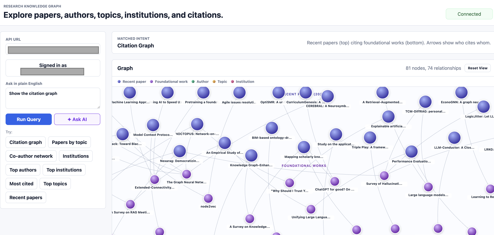
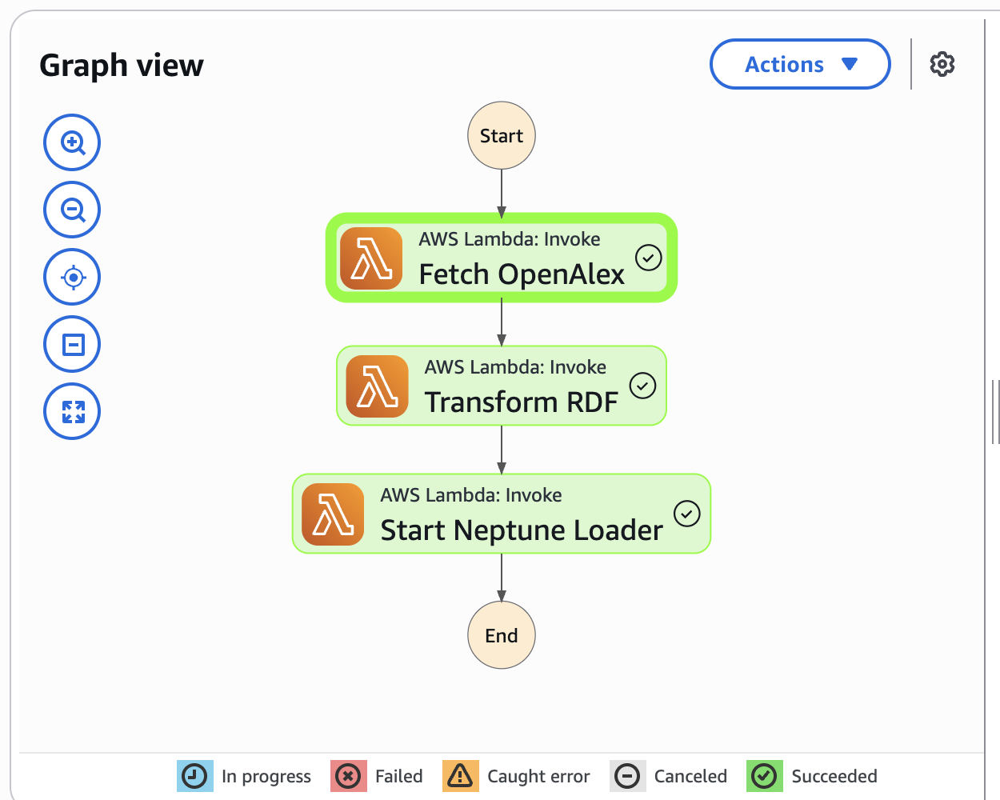
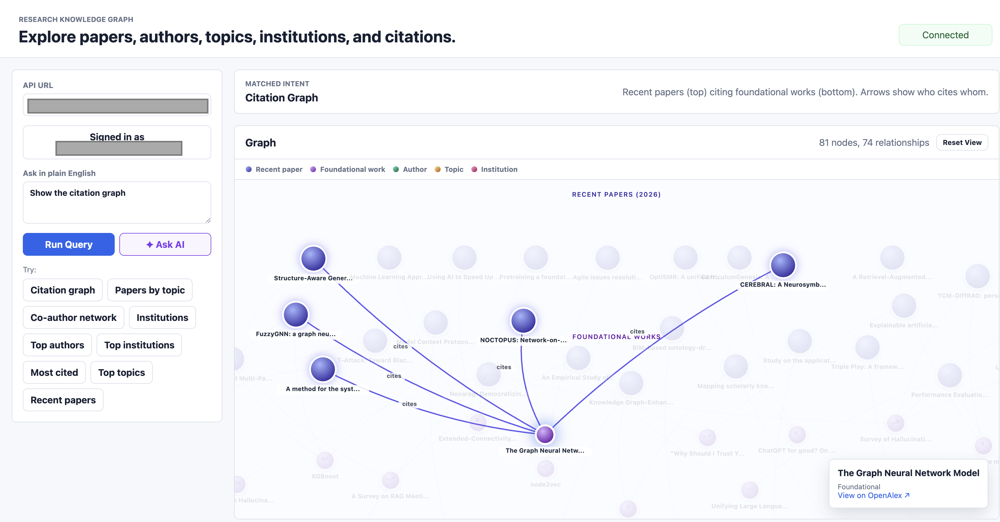
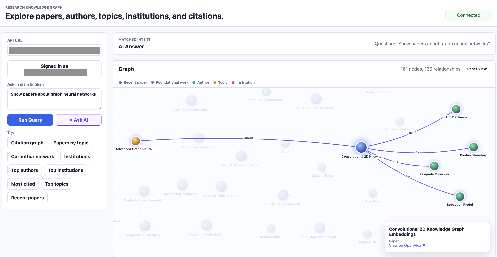

Research questions don't fit neatly in rows. "Who are the most central authors in this field who have never collaborated with the dominant lab?" needs five joins, two self-joins, and collapses completely if you change the question by one hop. The issue is structural: relational databases hide relationships inside foreign keys, an afterthought to the data. Knowledge graphs make them first-class, every edge is as real as every node, and queries read like the paths you're actually walking. I built a system on that idea: scholarly metadata from OpenAlex, stored as RDF triples in Amazon Neptune, queryable in SPARQL or plain English via a small LLM. This post is the full technical walkthrough.
What you will learn: the conceptual foundations of knowledge graphs, RDF and SPARQL, a working mental model of Amazon Neptune (storage, networking, scaling, bulk loading), and how the surrounding AWS services (Lambda, Step Functions, S3, DynamoDB, API Gateway, Cognito, EC2, VPC, CDK and CloudWatch) compose into a production-shaped serverless system.

1. Why Knowledge Graphs Exist
The Limits of the Relational Model
Imagine you are building a research metadata platform. You start with the obvious relational schema:
papers (id, title, year, journal_id)
authors (id, name, institution_id)
institutions (id, name, country)
paper_authors (paper_id, author_id, position)
citations (citing_paper_id, cited_paper_id)
topics (id, name)
paper_topics (paper_id, topic_id, score)For straightforward queries (the papers from 2024, the authors of a specific paper) this design is great. But research questions are rarely that simple. Consider:
- Find pairs of authors at different institutions who have both published on the same topic.
- Trace the citation lineage of a paper back three generations.
- Identify institutions whose researchers are central to a topic but have never collaborated with the dominant lab in that field.
Each of these collapses into a JOIN chain. Five tables, sometimes seven, sometimes self-joins on citations. The SQL gets long, the query planner gets unhappy and small changes to the question require restructuring the query.
The deeper problem is that the relational model represents relationships as foreign keys hidden inside tables. The structure of your data and the structure of your queries diverge. You spend your time translating between them.
The Graph Mindset
A knowledge graph inverts the priority. Relationships become first-class. Instead of tables that happen to contain foreign keys, you have a network of nodes (entities) connected by edges (relationships):
(Paper)─[authored by]─►(Author)─[affiliated with]─►(Institution)
│ │
│ ▼
│ (Author)
│
├─[has topic]─►(Topic)
│
└─[cites]─►(Paper)─[cites]─►(Paper)Now "find authors at different institutions who share a topic" becomes a pattern you can draw on a whiteboard:
find: (Author1)─[affiliated]─►(Inst1)
(Author2)─[affiliated]─►(Inst2)
(Author1)─[authored]─►(Paper1)─[hasTopic]─►(T)
(Author2)─[authored]─►(Paper2)─[hasTopic]─►(T)
where: Inst1 ≠ Inst2The query is the pattern. There is no translation step. This is the value proposition of a graph database. When your domain is naturally a network (research metadata, social graphs, fraud rings, supply chains, identity resolution) the storage model and the query model align.
When to Reach for a Graph
| Use a graph database when | Stick with relational when |
|---|---|
| Questions involve multi-hop traversal | Questions are filter-and-aggregate |
| Relationships are as important as the entities | Most queries hit a single table |
| The schema evolves with new relationship types | The schema is stable and well-understood |
| You need to merge data from many sources with stable IDs | Data lives in one system you control |
| Pattern matching is a primary workload | Set operations and joins are sufficient |
Research metadata sits firmly in the left column. So does fraud detection, recommendations, identity graphs and any domain where the question "who is connected to whom and how" matters.
2. RDF: A Universal Format for Graph Data
The Triple as the Atom of Knowledge
The Resource Description Framework (RDF) is a W3C standard that represents every fact as a triple:
subject predicate object .That is it. A graph is just a collection of triples. The same fact set we drew above looks like this in RDF:
<work/W123> rdf:type kg:Work
<work/W123> rdfs:label "Attention Is All You Need"
<work/W123> kg:publicationYear 2017
<work/W123> kg:authoredBy <author/A456>
<work/W123> kg:hasTopic <topic/T001>
<work/W123> kg:cites <work/W999>
<author/A456> rdfs:label "Ashish Vaswani"
<author/A456> kg:affiliatedWith <institution/I789>Each triple is a single edge in the graph. Stitch them together and you get a graph. There is no schema you have to declare up front. There are no NULL columns to worry about. If a paper has no publication year, you simply do not assert that triple.
Why URIs Matter
Every subject and predicate in RDF is a URI (Uniform Resource Identifier). Objects can be URIs or literals (strings, numbers, dates). URIs give every entity a globally unique, stable identity. This is the unsung superpower of RDF.
If two datasets both describe the paper https://openalex.org/W2964121958, you can merge them with no reconciliation logic. The URI is the join key. The same is true for vocabularies. When you use rdfs:label from the W3C-defined RDF Schema vocabulary, any other system that knows RDF immediately understands what it means.
In this project, every entity URI follows a deterministic pattern derived from its OpenAlex ID:
https://example.org/research-kg/resource/work/W2964121958
https://example.org/research-kg/resource/author/A2208157607
https://example.org/research-kg/resource/topic/T11273
https://example.org/research-kg/resource/institution/I32971472The relationship predicates and class types live under a separate ontology namespace:
https://example.org/research-kg/ontology/Work
https://example.org/research-kg/ontology/authoredBy
https://example.org/research-kg/ontology/hasTopicThe split between ontology URIs (the vocabulary: classes and properties) and resource URIs (the actual things) is a convention worth keeping. It makes the schema easy to evolve without colliding with the data.
Turtle: The Readable Serialization
RDF can be serialized in several formats (RDF/XML, N-Triples, JSON-LD, Turtle). Turtle is the one humans actually want to read. It collapses repetition with prefixes and a few syntactic shortcuts:
@prefix kg: <https://example.org/research-kg/ontology/> .
@prefix kgres: <https://example.org/research-kg/resource/> .
@prefix rdfs: <http://www.w3.org/2000/01/rdf-schema#> .
kgres:work/W123 a kg:Work ;
rdfs:label "Attention Is All You Need" ;
kg:publicationYear 2017 ;
kg:authoredBy kgres:author/A456 ;
kg:hasTopic kgres:topic/T001 ;
kg:cites kgres:work/W999 .
kgres:author/A456 a kg:Author ;
rdfs:label "Ashish Vaswani" ;
kg:affiliatedWith kgres:institution/I789 .Three pieces of syntax to know:
ais shorthand forrdf:type.;means "same subject, new predicate".,means "same subject and predicate, new object" (useful when something has many values).
This is the format the ingestion pipeline emits and the format Neptune's bulk loader consumes.
3. SPARQL: Querying Patterns in the Graph
The Core Idea
SPARQL is the query language for RDF. The mental model is straightforward: you describe a graph pattern with variables in the slots you want filled, and Neptune finds every way the pattern matches the stored triples.
The simplest query you can write:
SELECT ?s ?p ?o WHERE { ?s ?p ?o } LIMIT 10This returns ten arbitrary triples from the graph. The variables ?s, ?p and ?o match anything. Add structure to constrain the match.
A First Real Query
List the ten most recent papers:
PREFIX kg: <https://example.org/research-kg/ontology/>
PREFIX rdfs: <http://www.w3.org/2000/01/rdf-schema#>
SELECT ?title ?year
WHERE {
?work a kg:Work ;
rdfs:label ?title ;
kg:publicationYear ?year .
}
ORDER BY DESC(?year)
LIMIT 10Read it as: "find every ?work that is a kg:Work, has a rdfs:label we will call ?title and has a kg:publicationYear we will call ?year". Neptune evaluates this against the triple store, binds each variable for every match and returns the result set.
Multi-Hop Traversal
This is where SPARQL pulls away from SQL. Walk from paper to author to institution in a single pattern:
PREFIX kg: <https://example.org/research-kg/ontology/>
PREFIX rdfs: <http://www.w3.org/2000/01/rdf-schema#>
SELECT ?title ?author ?institution
WHERE {
?work a kg:Work ;
rdfs:label ?title ;
kg:authoredBy ?a .
?a rdfs:label ?author ;
kg:affiliatedWith ?i .
?i rdfs:label ?institution .
}
LIMIT 25That is three hops. The equivalent SQL would be three JOINs, three table aliases and an ORDER BY to make the result predictable. The SPARQL reads like the graph path you are walking.
Aggregation and Grouping
SPARQL supports the SQL-like aggregations you would expect. Rank topics by paper count:
PREFIX kg: <https://example.org/research-kg/ontology/>
PREFIX rdfs: <http://www.w3.org/2000/01/rdf-schema#>
SELECT ?topicName (COUNT(?work) AS ?paperCount)
WHERE {
?work kg:hasTopic ?topic .
?topic rdfs:label ?topicName .
}
GROUP BY ?topicName
ORDER BY DESC(?paperCount)
LIMIT 20The Label Matching Gotcha
Neptune does exact string matching by default. A query like:
?t rdfs:label "Graph Neural Networks"returns nothing if the stored label is "Advanced Graph Neural Networks". For any label-based search you need a FILTER with case folding:
?t rdfs:label ?name .
FILTER(CONTAINS(LCASE(?name), "graph neural network"))This becomes important later when an LLM generates SPARQL. Small models love to write exact-match label filters and they fail silently with zero results. The prompt and the post-processor in this project both work to enforce the CONTAINS pattern.
The Powerful Patterns
A few SPARQL features that pay off in real workloads:
OPTIONAL { ... }: include triples if they exist, do not fail the row if they do not. Equivalent to a LEFT JOIN.FILTER NOT EXISTS { ... }: anti-pattern matching. "Authors who have never collaborated with X".?x kg:cites+ ?y: property paths.+means one or more hops.?x kg:cites* ?ymeans zero or more. This is how you compute reachability without recursion.CONSTRUCT { ... } WHERE { ... }: build a new graph from a pattern. Useful for materializing inferred relationships.
The property path syntax in particular is something SQL fundamentally cannot express without recursive CTEs. In SPARQL, ?a kg:cites+ ?b finds every paper transitively cited by ?a.
4. Amazon Neptune: A Working Mental Model
What Neptune Actually Is
Amazon Neptune is a fully managed graph database service. AWS handles the hardware, the operating system, the database engine upgrades, the backups, the replication and the failover. You get an endpoint, an authentication mechanism and a query API.
Under the hood Neptune runs on the same purpose-built storage layer that powers Aurora. The storage is decoupled from compute, replicated across three Availability Zones in six copies and grows automatically up to 128 TB. You never resize a disk or worry about volume snapshots.
The Two Graph Models
Neptune is unusual in supporting both major graph paradigms in the same cluster:
| Model | Query Languages | Conceptual Model | Strengths |
|---|---|---|---|
| RDF | SPARQL 1.1 | Subject-predicate-object triples with URIs | Standards-based, federation, schema-on-read, linked data interop |
| Property Graph | Gremlin, openCypher | Nodes and edges with property bags and labels | Schema-flexible, expressive traversals, large social/transactional graphs |
For this project I chose RDF because OpenAlex already assigns stable URIs to every entity. The triple model maps onto the data with no translation layer. If you are building a domain graph where each edge has its own properties (a financial transaction graph for instance), property graph with Gremlin or openCypher is usually the better fit.
You cannot mix the two within a single Neptune cluster's data, but you can run both engines side by side in the same cluster. They use the same underlying storage but expose different query interfaces.
Neptune Serverless
The provisioned model required you to pick an instance class (db.r6g.xlarge, db.r6g.4xlarge) and pay for it 24/7. Neptune Serverless replaces this with automatic capacity scaling expressed in Neptune Capacity Units (NCUs). One NCU is roughly 2 GiB of memory along with the proportional CPU and networking. The supported range is 1 to 128 NCUs, scaling in 0.5 NCU increments.
cluster = neptune.CfnDBCluster(
self, "NeptuneCluster",
db_cluster_identifier=f"{project_name}-neptune",
storage_encrypted=True,
vpc_security_group_ids=[neptune_sg.security_group_id],
associated_roles=[
neptune.CfnDBCluster.DBClusterRoleProperty(role_arn=loader_role.role_arn)
],
serverless_scaling_configuration=neptune.CfnDBCluster.ServerlessScalingConfigurationProperty(
min_capacity=1,
max_capacity=4,
),
)For a demo or development workload the cluster sits at the minimum (1 NCU) when idle and scales up within seconds when queries arrive. Importantly, Serverless does not pause completely. It always stays at the minimum NCU floor. If you need a true zero-cost idle state, you have to stop the cluster manually.
You also need to attach a Serverless DB instance to the cluster (the cluster is the storage, the instance is the compute):
instance = neptune.CfnDBInstance(
self, "NeptuneServerlessInstance",
db_cluster_identifier=cluster.ref,
db_instance_class="db.serverless",
)
instance.add_dependency(cluster)The db.serverless instance class is what makes the compute follow the scaling configuration you set on the cluster.
The Network Model
Neptune does not have a public endpoint. Ever. It runs inside a VPC subnet and is reachable only by clients in the same VPC (or peered VPCs, or via Transit Gateway, or through PrivateLink). The wire protocol is HTTPS on port 8182 for both SPARQL and Gremlin.
This is a deliberate security choice by AWS. A graph database holding linked data is exactly the kind of resource you do not want directly exposed to the internet. Access control happens at two layers:
- Network layer: VPC subnet placement, security groups and route tables decide who can even establish a TCP connection.
- Authentication layer (optional): IAM database authentication can be enabled to require AWS SigV4-signed requests. This project relies on network isolation alone, with the SPARQL endpoint placed behind Cognito-authenticated API Gateway.
The security group setup in CDK:
lambda_sg = ec2.SecurityGroup(self, "LambdaSecurityGroup", vpc=vpc)
neptune_sg = ec2.SecurityGroup(self, "NeptuneSecurityGroup", vpc=vpc)
neptune_sg.add_ingress_rule(
lambda_sg,
ec2.Port.tcp(8182),
"Allow VPC Lambda functions to query Neptune",
)The rule is a reference to the Lambda security group, not an IP range. Any Lambda attached to lambda_sg can reach Neptune on 8182. Any Lambda not attached to lambda_sg cannot. The reachability rule is expressed in terms of identity, not address.
Bulk Loading: How Data Actually Gets In
You can insert RDF triples with SPARQL UPDATE INSERT, but for any non-trivial volume this is the wrong tool. Neptune ships a dedicated bulk loader that reads files directly from S3. The Lambda triggering the load sends a single HTTP POST to https://<cluster-endpoint>:8182/loader with the S3 path and the credentials Neptune should use:
{
"source": "s3://my-rdf-bucket/path/to/file.ttl",
"format": "turtle",
"iamRoleArn": "arn:aws:iam::123456789012:role/NeptuneLoaderRole",
"region": "us-east-1",
"failOnError": "TRUE",
"parallelism": "MEDIUM"
}Neptune then pulls the data directly from S3. The data does not flow through the Lambda. This is critical for performance: bulk loads of millions of triples complete in minutes because the network path is S3 to Neptune, both inside the AWS backbone.
For Neptune to assume an IAM role, the role's trust policy must name rds.amazonaws.com as the trusted service. Neptune is built on the RDS control plane, so this is the principal it uses:
loader_role = iam.Role(
self, "NeptuneLoaderRole",
assumed_by=iam.ServicePrincipal("rds.amazonaws.com"),
)
rdf_bucket.grant_read(loader_role)The role must then be associated with the cluster so Neptune knows it is allowed to use it:
associated_roles=[
neptune.CfnDBCluster.DBClusterRoleProperty(role_arn=loader_role.role_arn)
]One more piece: the cluster needs network reachability to S3. Inside a private VPC the cleanest way to achieve this is a gateway endpoint for S3. Traffic stays on the AWS network and never touches the public internet:
vpc.add_gateway_endpoint(
"S3Endpoint",
service=ec2.GatewayVpcEndpointAwsService.S3,
)Cost Anatomy
For a demo workload, Neptune Serverless is the dominant cost line. A baseline of 1 NCU running 24/7 costs approximately $94/month. Storage is billed per GB-month. Bulk load operations cost the same as any other I/O. Lambda, S3, DynamoDB, API Gateway and Cognito for this scale are effectively free (or fractions of a dollar). If you are running this as a learning project, the cleanest cost control is to stop the Neptune cluster when not in use.
5. The System: An End-to-End Knowledge Graph on AWS
With the foundations in place, here is the system that ties it all together. Three independent flows share the same Neptune backend: ingestion (via Step Functions), structured SPARQL query and natural language query (via a small LLM on EC2).

The next sections walk through how each piece is wired and what role it plays. The pattern reuses the same AWS primitives in different configurations.
6. Data Ingestion: Step Functions Orchestrates Lambda
Why an Orchestrator
The ingestion path has three stages: fetch from OpenAlex, transform to RDF Turtle, hand to Neptune's bulk loader. Each stage is a few hundred lines of Python and would fit in one Lambda. The reason it is three is operational:
- Lambda has a 15-minute hard ceiling. A large OpenAlex search can exceed this if combined with transformation.
- If transformation fails, you do not want to re-fetch from OpenAlex. The raw JSON is the expensive artifact.
- Each stage produces a versioned, replayable artifact in S3. You can re-run later stages without re-running earlier ones.
- Step Functions gives you a visual timeline of every execution. Debugging a failed ingest is "click on the red box".
The state machine in CDK is a simple chain:
state_machine = sfn.StateMachine(
self, "IngestionStateMachine",
definition_body=sfn.DefinitionBody.from_chainable(
tasks.LambdaInvoke(self, "Fetch OpenAlex",
lambda_function=fetch_fn,
payload_response_only=True)
.next(tasks.LambdaInvoke(self, "Transform RDF",
lambda_function=transform_fn,
payload_response_only=True))
.next(tasks.LambdaInvoke(self, "Start Neptune Loader",
lambda_function=loader_fn,
payload_response_only=True))
),
timeout=Duration.minutes(15),
)
Stage 1: Fetch
The Fetch Lambda lives outside the VPC because it needs to call api.openalex.org. It pages through the OpenAlex Works API and writes the raw JSON to S3:
s3://research-kg-raw/openalex/{job_id}/page-001.json
s3://research-kg-raw/openalex/{job_id}/page-002.json
...It also updates the DynamoDB job record with status FETCHED, the page count and the byte count. The status field is the contract: every Lambda in the chain writes its outcome here.
Stage 2: Transform
The Transform Lambda reads the raw pages from S3 and produces RDF Turtle. This is where the OpenAlex schema is mapped onto the kg ontology. A condensed version of the conversion:
def work_to_turtle(work: dict) -> str:
work_uri = f"kgres:work/{work['id'].rsplit('/', 1)[-1]}"
triples = [
f'{work_uri} a kg:Work ;',
f' rdfs:label {json.dumps(work["title"])} ;',
f' kg:publicationYear {work["publication_year"]} .',
]
for authorship in work["authorships"]:
author_id = authorship["author"]["id"].rsplit("/", 1)[-1]
triples.append(f'{work_uri} kg:authoredBy kgres:author/{author_id} .')
for cited in work.get("referenced_works", []):
cited_id = cited.rsplit("/", 1)[-1]
triples.append(f'{work_uri} kg:cites kgres:work/{cited_id} .')
return "\n".join(triples)The output is written to:
s3://research-kg-rdf/openalex/{job_id}/works.ttlStage 3: Load
The Loader Lambda runs inside the VPC because it needs to reach the Neptune endpoint. It POSTs to Neptune's /loader endpoint with the S3 path and the IAM role ARN, and records LOAD_SUBMITTED in DynamoDB. Neptune then asynchronously pulls the file from S3 and parses every triple into the graph.
A production hardening would poll the loader status API (GET /loader/{loadId}) until the load reaches LOAD_COMPLETED or LOAD_FAILED and update DynamoDB accordingly. This project currently records LOAD_SUBMITTED and stops there. It is in the "what's next" list.
7. The Query Layer: API Gateway, Cognito and Lambda
The Public Surface
Every API in this system is fronted by Amazon API Gateway HTTP API v2. It is the cheaper, faster successor to REST API v1 and is the right choice when you are doing Lambda proxy integrations with no exotic transformations.
API Gateway gives you HTTPS termination, request routing, CORS preflight handling and authentication integration. Your Lambda functions never need to know about any of it. They receive a normalized event and return a normalized response.
Authentication with Cognito
Amazon Cognito User Pools provide managed user directories with built-in support for sign-up, sign-in, password policies and JWT issuance. The flow looks like this:
- Client posts email and password to
POST /auth. - The Auth Lambda forwards the credentials to Cognito's
InitiateAuthAPI. - Cognito returns a JWT ID token with a 1-hour expiry.
- The client includes the token in every subsequent request as
Authorization: Bearer <token>. - API Gateway validates the token signature and expiry against the User Pool before invoking the downstream Lambda. Invalid or expired tokens get a 401 and never reach your code.
The CDK wiring:
user_pool = cognito.UserPool(self, "UserPool",
self_sign_up_enabled=False,
sign_in_aliases=cognito.SignInAliases(email=True),
)
client = user_pool.add_client("ApiClient",
auth_flows=cognito.AuthFlow(user_password=True, user_srp=True),
)
authorizer = HttpUserPoolAuthorizer("UserPoolAuthorizer",
user_pool, user_pool_clients=[client])Routes that should require auth simply receive the authorizer as a parameter:
self._route(http_api, "/query/sparql", [POST], sparql_fn, authorizer)
self._route(http_api, "/query/nl", [POST], nl_fn, authorizer)The SPARQL Endpoint
The SPARQL Lambda is the only path from the public internet to Neptune. It validates that the query is read-only (no INSERT, DELETE, DROP or CLEAR) and proxies it to Neptune over HTTPS:
def handler(event, context):
body = json.loads(event.get("body") or "{}")
query = body.get("query", "").strip()
if re.search(r"\b(INSERT|DELETE|DROP|CLEAR|LOAD)\b", query, re.I):
return json_response(403, {"error": "Read-only queries only"})
resp = requests.post(
f"https://{NEPTUNE_ENDPOINT}:8182/sparql",
data={"query": query},
timeout=30,
)
return json_response(200, {"result": resp.json()})This Lambda runs inside the VPC with the Neptune security group. Anything outside the VPC has no path to Neptune.

8. Natural Language Queries: Bridging Two Networks
The Concept
Typing SPARQL is a barrier. Most users want to ask "show me papers about graph neural networks" and get a graph back. That requires an LLM to translate intent into SPARQL.
For this proof of concept I run Ollama with a small open-source model (qwen2.5:0.5b, 500M parameters) on a t3.medium EC2 instance. Ollama exposes an HTTP API at http://<ip>:11434/api/generate. The NL Lambda sends a few-shot prompt and gets back a SPARQL string. In production this would be replaced by Amazon Bedrock or a managed model endpoint, but the architectural pattern is the same.
The Network Problem
The NL Lambda needs to talk to two different things:
- Ollama, which lives on an EC2 instance with a public IP. Requires outbound internet from the Lambda.
- Neptune, which lives in a private VPC. Forbids internet egress.
A single Lambda cannot satisfy both. Lambdas attached to a VPC with no NAT gateway have no internet access. Lambdas without a VPC attachment cannot reach private resources.
The Lambda-to-Lambda Pattern
The solution is to split responsibilities. The NL Lambda runs outside the VPC so it can reach Ollama. To run a SPARQL query against Neptune, it invokes the SPARQL Lambda (which is already inside the VPC) via the AWS SDK:
def _run_via_sparql_lambda(sparql: str) -> dict:
resp = boto3.client("lambda").invoke(
FunctionName=SPARQL_FUNCTION_NAME,
InvocationType="RequestResponse",
Payload=json.dumps({
"body": json.dumps({"query": sparql}),
"requestContext": {"authorizer": {"jwt": {"claims": {}}}},
}).encode(),
)
return json.loads(resp["Payload"].read())The Lambda service routes this invocation internally. There is no network call from the NL Lambda to the SPARQL Lambda. AWS handles the cross-boundary communication. The IAM policy is tight:
nl_fn.add_to_role_policy(iam.PolicyStatement(
actions=["lambda:InvokeFunction"],
resources=[sparql_fn.function_arn],
))One Lambda can invoke exactly one other Lambda. This is significantly cheaper and simpler than provisioning a NAT gateway (≈$32/month plus per-GB charges) and avoids opening a second network egress path.
Prompt Engineering for Small Models
A 500M-parameter model is not going to one-shot complex SPARQL. The prompt does a lot of work:
- Schema declaration: the ontology is included up front so the model knows the predicates and classes.
- Few-shot examples: five canonical question-to-SPARQL pairs covering common patterns (recent papers, topic search, author counts, citation counts, institution rankings).
- Hard rules: "never filter by exact string literal, always use FILTER(CONTAINS(LCASE(...)))". The few-shot examples reinforce this by demonstration.
Even with this, the model makes systematic mistakes. The post-processor in the NL Lambda catches them:
- Missing
kg:hasTopiclink when the model forgets to connect?wto?t. - Using
kg:labelinstead ofrdfs:label. - Putting
LIMITbeforeORDER BY(invalid SPARQL). - Filtering on a URI variable when the intent was to filter on its label.
Each is a small regex fixup. Together they turn a flaky model into a reliable system for the common query patterns. The complete CloudWatch log of every NL invocation captures the question, the raw LLM output, the post-processed SPARQL and the Neptune row count, so failures are diagnosable in seconds.

9. Frontend: Turning a Triple Set into a Graph You Can Click
The frontend is a static single-page app in vanilla JavaScript, served from any S3 bucket or local HTTP server. It does three things:
- Submits user questions to
POST /query/nlor canned questions toPOST /query/sparql. - Detects the shape of the SPARQL result (four columns with URI subjects → graph; two columns with literals → table).
- Renders graphs using an in-browser force-directed layout. Nodes are coloured by entity type (paper, topic, author, institution). Edges carry labels like "cites", "has topic" and "authored by".
Clicking a node highlights its neighbours, dims the rest of the graph and shows an overlay with the OpenAlex link. Clicking the background clears the selection. The whole interaction loop happens client-side; no extra API calls.
For NL queries returning four-column graph data, the frontend also issues an enrichment SPARQL call to add author connections to the same papers. This is the kind of UX touch you cannot easily ask the LLM to generate; it lives in the application layer.
10. Infrastructure as Code: One CDK Stack
The entire stack lives in a single CDK Python module of around 400 lines. CDK compiles to CloudFormation, AWS deploys CloudFormation. The advantage of CDK over raw CloudFormation YAML is that it is regular Python: you get IDE autocomplete, type checking, helper functions and refactorability.
A Helper that Pays Off
Every Lambda in the stack uses the same code asset, the same runtime and the same memory size. The differentiators are the handler, the environment variables, the timeout and the VPC placement. A small helper captures this:
def _lambda(self, construct_id, handler, *, environment=None,
timeout=Duration.seconds(30), vpc=None, security_groups=None):
return lambda_.Function(
self, construct_id,
runtime=lambda_.Runtime.PYTHON_3_11,
handler=handler,
code=lambda_.Code.from_asset(str(SRC_DIR)),
memory_size=512,
timeout=timeout,
environment=environment or {},
vpc=vpc,
security_groups=security_groups,
)VPC-attached Lambdas pass vpc=vpc, security_groups=[lambda_sg]. Internet-attached Lambdas omit those parameters. One line of difference per function.
No Hard-Coded ARNs
Lambda code receives all its dependencies as environment variables resolved at deploy time:
base_env = {
"JOB_TABLE_NAME": job_table.table_name,
"RAW_BUCKET_NAME": raw_bucket.bucket_name,
"RDF_BUCKET_NAME": rdf_bucket.bucket_name,
"NEPTUNE_ENDPOINT": cluster.attr_endpoint,
"NEPTUNE_LOADER_ROLE_ARN": loader_role.role_arn,
"SPARQL_FUNCTION_NAME": sparql_fn.function_name,
}There are no ARNs or bucket names anywhere in Python code outside the CDK stack itself. This is the single most valuable property of an IaC-first workflow. Rename a resource, redeploy, and every reference updates atomically.
Least-Privilege IAM at Resource Boundaries
CDK's grant_* methods generate IAM policies that are scoped to specific resources and actions:
raw_bucket.grant_write(fetch_fn) # s3:PutObject on the raw bucket
raw_bucket.grant_read(transform_fn) # s3:GetObject on the raw bucket
rdf_bucket.grant_write(transform_fn) # s3:PutObject on the RDF bucket
job_table.grant_read_write_data(fetch_fn)
state_machine.grant_start_execution(ingest_start_fn)The Fetch Lambda cannot read its own output. The Transform Lambda cannot write to the raw bucket. The Ingest API Lambda cannot do anything except start the state machine. This is least privilege expressed in three lines.
11. Observability: CloudWatch Logs and Alarms
Every Lambda in this stack writes structured logs to CloudWatch automatically. The NL Lambda's log lines are intentionally verbose:
[NL] question: 'show papers about graph neural networks'
[NL] ollama raw: 'PREFIX kg: ... SELECT ?w ?title ?t ?tname ...'
[NL] sparql: 'PREFIX kg: ... SELECT ?w ?title ?t ?tname ...'
[NL] result vars: ['w', 'title', 't', 'tname'], rows: 40
[NL] first row: {'w': {'value': 'https://example.org/research-kg/resource/work/W3173220247'}, ...}When a query returns unexpected results, this log is the first place to look. You see the exact question, the exact LLM output, the exact post-processed SPARQL and the exact Neptune response. There is no SSH, no debugger and no need to reproduce locally.
An alarm watches for failed Step Functions executions:
cloudwatch.Alarm(self, "IngestionFailedAlarm",
metric=state_machine.metric_failed(),
threshold=1, evaluation_periods=1,
)If any ingestion run fails, the alarm transitions to ALARM state. Wire it to an SNS topic for email or Slack notifications and you have an on-call signal.
12. The Big Picture: A Service Cheat Sheet
| Service | What It Is | Role Here | Key Insight |
|---|---|---|---|
| Amazon Neptune | Managed graph database | Stores RDF triples, executes SPARQL | Always inside a VPC, port 8182, supports RDF and Property Graph |
| AWS Lambda | Serverless functions | All compute: ingestion, APIs, NL translation | VPC placement is a deliberate architectural choice |
| AWS Step Functions | Workflow orchestration | Sequences fetch → transform → load | Use it when stages need independent retry and visibility |
| Amazon S3 | Object storage | Raw JSON and RDF Turtle | Gateway endpoints keep VPC traffic off the internet |
| Amazon DynamoDB | Serverless KV store | Ingestion job state | Right fit when the access pattern is single-key lookup |
| Amazon API Gateway | Managed HTTP front door | HTTPS, CORS, routing, auth integration | HTTP API v2 is the modern default |
| Amazon Cognito | User identity service | JWT issuance and validation | Authorizer attaches to routes, not Lambdas |
| Amazon EC2 | Virtual machines | Hosts the Ollama LLM | Use for stateful workloads that do not fit Lambda |
| Amazon VPC | Private networking | Isolates Neptune from the internet | Identity-based security groups beat IP-range rules |
| AWS CDK | Infrastructure as code | Defines the entire stack in Python | One stack, one deploy, one source of truth |
| Amazon CloudWatch | Logs, metrics, alarms | Observability for every Lambda and Step Function | Verbose structured logging pays off in incident response |
13. What I Would Build Next
- Recursive citation enrichment. Today, citation edges only exist between papers that were both ingested. A graph-aware enrichment job would walk one or two hops outward from each ingested paper and fetch the missing metadata, producing a much denser citation network.
- Loader status polling. The Loader Lambda currently records
LOAD_SUBMITTEDand stops. A follow-up Step Functions branch could poll Neptune's loader status API until completion and update DynamoDB with the final outcome. - Bedrock for the NL layer. The
qwen2.5:0.5bmodel handles common patterns but stumbles on multi-hop questions. Routing complex queries to Claude on Bedrock (with the same prompt scaffold) would substantially expand what the NL interface can answer reliably. - Subgraph-shaped APIs. Endpoints like
/works/{id}/citation-network?depth=2that return ready-to-render subgraph JSON, instead of forcing the client to assemble it from multiple SPARQL calls. - IAM database auth on Neptune. Today the network layer is the only enforcement. Enabling IAM database authentication would require every connection to be SigV4-signed by an authorized principal, adding defense in depth.
14. Takeaways
Three things to walk away with:
Pick the right data model for the question shape. Knowledge graphs are not better than relational databases. They are better at one specific thing: representing and querying networks of relationships. If your questions traverse multiple entity types, the alignment between your data and your queries removes a lot of friction.
Neptune is a managed graph database, not a magical one. It runs in a VPC, scales as NCUs, costs real money when idle and uses standard SPARQL or Gremlin. The trick is wiring it correctly: bulk load from S3 via an IAM role with rds.amazonaws.com as the principal, network access controlled by security groups not IP ranges, gateway endpoints for S3 to avoid NAT charges.
Serverless composition rewards small, focused services. Lambda-to-Lambda invocation is a clean way to cross VPC boundaries without paying for a NAT gateway. Step Functions makes multi-stage workflows visible and replayable. CDK keeps the whole graph of resources, IAM grants and environment wiring in one reviewable place. The system in this post is nine Lambdas, three buckets, a Neptune cluster, a state machine, an HTTP API, a Cognito User Pool and one EC2 instance. The CDK stack that defines all of it fits in one screen.